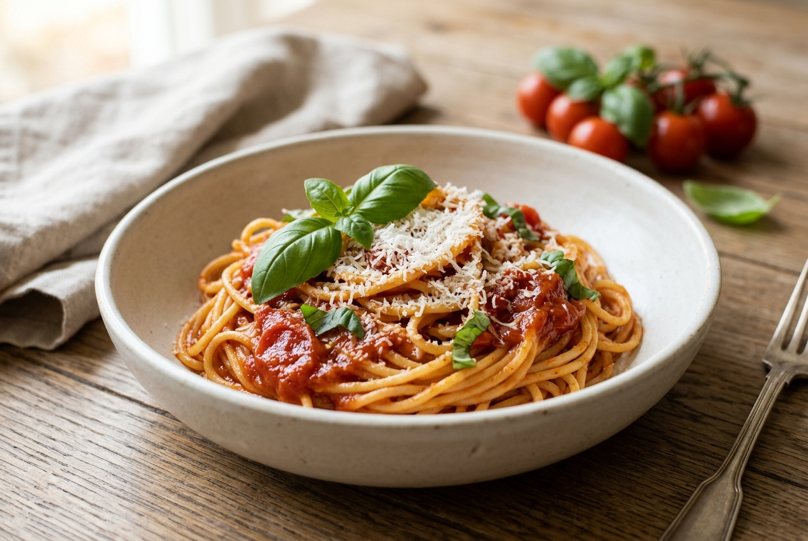
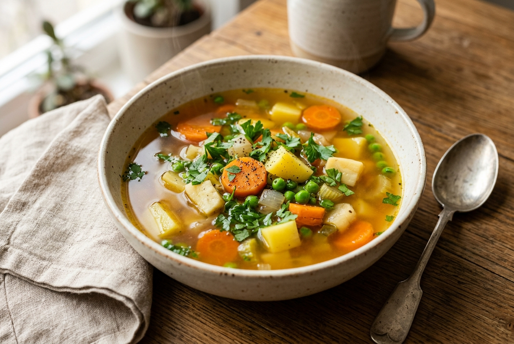
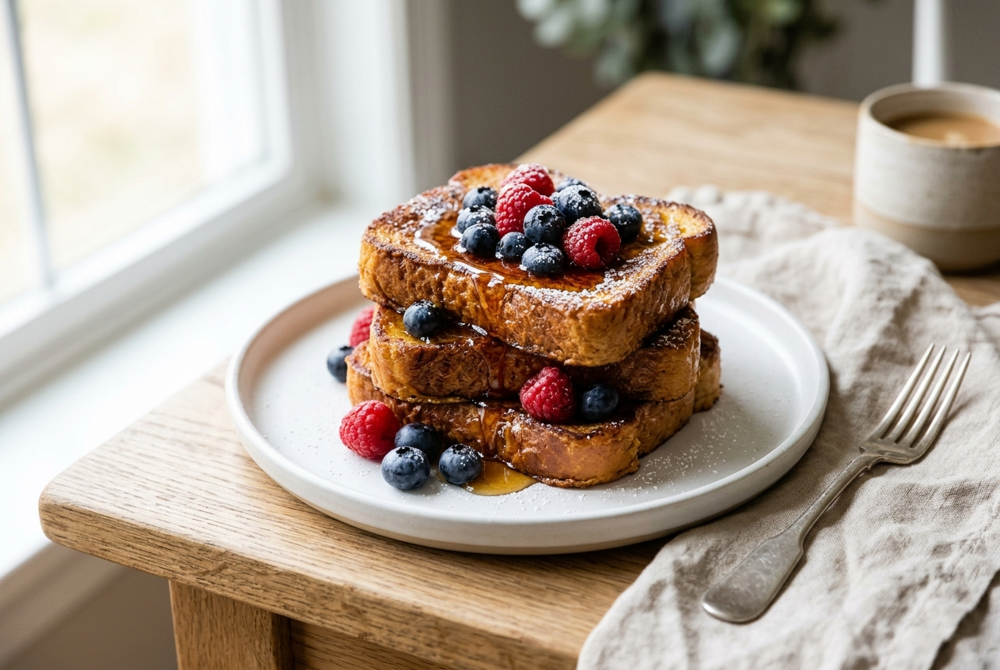

Tomato Basil Pasta
Quick Italian dinner ready in 30 minutes with fresh basil.
Search simple and delicious recipes by name or cuisine, compare cooking times, or submit your own recipe.
Search Recipes
Quick Italian dinner ready in 30 minutes with fresh basil.

Simple, hearty, and nourishing soup for busy weekdays.

Sweet and quick weekend breakfast ready in 15 minutes.